חיפושים לא מיודעים — BFS, DFS, UCS, IDS
⏱ זמן משוער: 70 דק'
0. האינטואיציה — לחפש בעיניים עצומות
בפרק הקודם ניסחנו בעיית חיפוש כרביעייה: מרחב מצבים, פונקציית עוקב, מבחן מטרה ועלות מסלול. עכשיו נשאל: איך בפועל "מטיילים" במרחב הזה כדי למצוא פתרון? חיפוש לא מיודע (uninformed / blind search) עונה בלי שום רמז נוסף על המרחק למטרה — האלגוריתם לא "יודע" כמה רחוק המטרה, הוא רק רואה את מבנה הבעיה עצמה: אילו מצבים נוצרים, ובאיזה סדר. בפרק הבא (חיפוש מיודע) נוסיף heuristic שמנחה לאן כדאי ללכת — כאן, בלי שום ניחוש.
המצגת סוקרת שישה אלגוריתמים כאלה: BFS, Bidirectional Search, DFS, Depth-Limited Search (DLS), Iterative Deepening Search (IDS) ו-Uniform-Cost Search (UCS). הבשורה הטובה: כולם אותו שלד בדיוק — עץ/גרף חיפוש שבו קודקוד נוצר, בודקים אם הוא המטרה, ואם לא — מפעילים עליו את פונקציית העוקב ומכניסים את הבנים ל"עלים" (frontier). ההבדל היחיד בין האלגוריתמים הוא מבנה הנתונים של העלים — מי נבחר "הבא בתור" להתפתחות:
- BFS — תור FIFO (הראשון שנכנס, ראשון שיוצא) → מפתח שכבה-שכבה.
- DFS — מחסנית LIFO (האחרון שנכנס, ראשון שיוצא) → צולל לעומק.
- UCS — תור ממוין לפי עלות מסלול g → מפתח את הזול ביותר.
- DLS — כמו DFS, אך עם תקרת עומק מלאכותית ℓ.
- IDS — מריץ DLS שוב ושוב עם ℓ = 0, 1, 2, ….
- Bidirectional — שני חיפושים (קדימה ואחורה) שנפגשים באמצע.
נסו בעצמכם: בחרו אלגוריתם חיפוש והריצו אותו צעד-אחר-צעד על גרף לדוגמה — עקבו אחרי מבנה הנתונים של ה"עלים" (תור/מחסנית), הקודקוד שנבחר בכל שלב, וסדר הפיתוח המלא שמתקבל.
מקור: 04-uninformed-search.pdf (עמ' 1–2)
1. Breadth-First Search (BFS) — לפתח שכבה-שכבה
BFS מפתח תמיד את העלה הכי קרוב לשורש: רק אחרי שכל השכנים של השורש פותחו עוברים לשכנים-של-שכנים, וכן הלאה. מבנה הנתונים: תור FIFO. אם המטרה לא נמצאת — BFS יסרוק את כל מרחב המצבים.
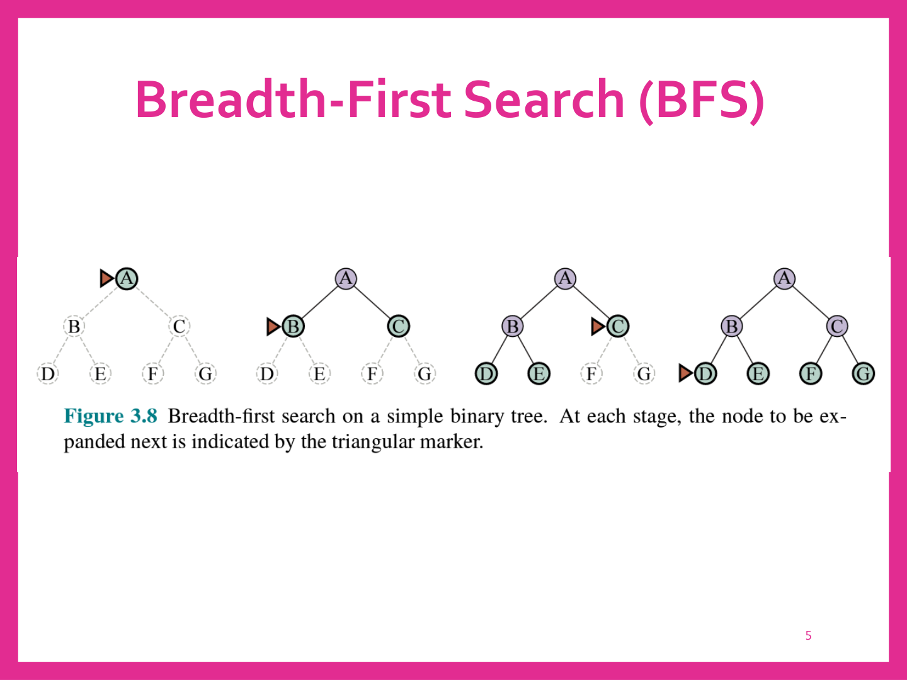
פסאודו-קוד (גרסת עץ — בדיקת מטרה מוקדמת, "early goal test"):
function BREADTH-FIRST-SEARCH(problem) returns a solution node or failure
node ← NODE(problem.INITIAL)
if problem.IS-GOAL(node.STATE) then return node
leaves ← a FIFO queue, with node as an element
while not IS-EMPTY(leaves) do
node ← Dequeue(leaves)
for each child in EXPAND(problem, node) do
s ← child.STATE
if problem.IS-GOAL(s) then return child
add child to leaves
return failure
הרצה מלאה — מ-Arad ל-Bucharest (שבירת שוויון לקסיקוגרפית)
נריץ על מפת רומניה הקלאסית, כשקשר תיקו נשבר לפי סדר אלפביתי. כל הצלעות במפה:
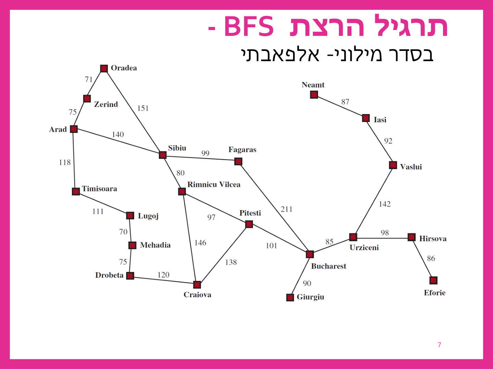
| קשת | משקל | קשת | משקל |
|---|---|---|---|
| Oradea–Zerind | 71 | Craiova–Rimnicu Vilcea | 146 |
| Oradea–Sibiu | 151 | Craiova–Pitesti | 138 |
| Zerind–Arad | 75 | Rimnicu Vilcea–Pitesti | 97 |
| Arad–Sibiu | 140 | Fagaras–Bucharest | 211 |
| Arad–Timisoara | 118 | Pitesti–Bucharest | 101 |
| Sibiu–Fagaras | 99 | Bucharest–Giurgiu | 90 |
| Sibiu–Rimnicu Vilcea | 80 | Bucharest–Urziceni | 85 |
| Timisoara–Lugoj | 111 | Urziceni–Hirsova | 98 |
| Lugoj–Mehadia | 70 | Urziceni–Vaslui | 142 |
| Mehadia–Drobeta | 75 | Hirsova–Eforie | 86 |
| Drobeta–Craiova | 120 | Vaslui–Iasi | 92 |
| Iasi–Neamt | 87 | ||
הרצה צעד-אחר-צעד:
- צעד 1 — Arad (1): נפתח; בניו נוצרים: Sibiu, Timisoara, Zerind.
- צעד 2 — Sibiu (2): הראשון בתור לקסיקוגרפית מבין Sibiu/Timisoara/Zerind. נפתח; בניו: Oradea, Fagaras, Rimnicu Vilcea.
- צעד 3 — Timisoara (3): נפתח; בנו היחיד: Lugoj.
- צעד 4 — Zerind (4): נפתח; הבן Oradea — אך הוא כבר נוצר (דרך Sibiu) → מצב חוזר, אין תוספת חדשה.
- צעד 5 — Fagaras (5): הבא לקסיקוגרפית מבין העלים Fagaras, Lugoj, Oradea, Rimnicu Vilcea. הבן שלו Bucharest נוצר — ומבחן המטרה המוקדם מזהה אותו מיד: החיפוש נעצר!
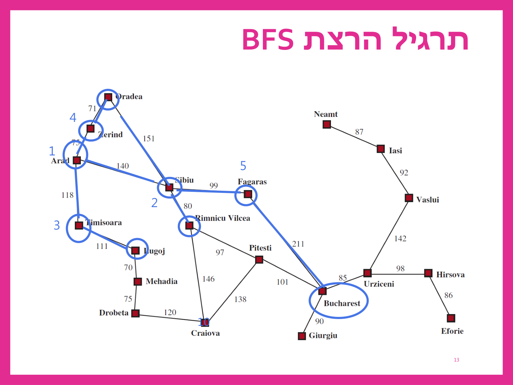
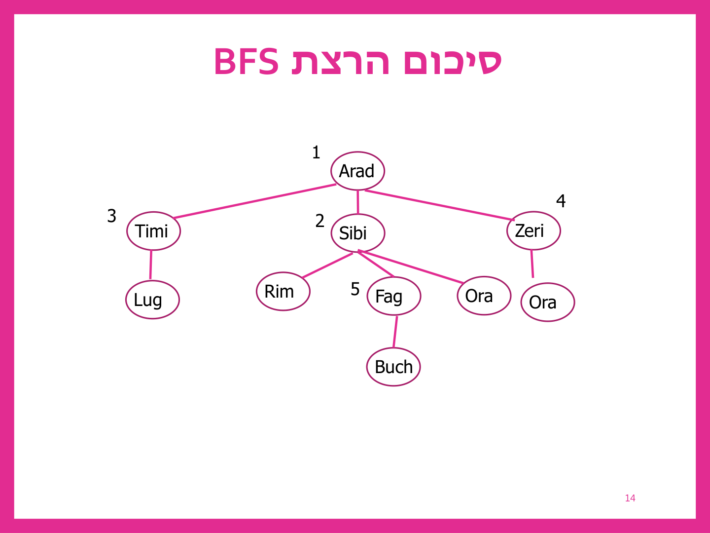
מצבים חוזרים ו-Graph Search
חוסר יכולת לזהות מצבים חוזרים יכול להפוך בעיה לינארית לבעיה אקספוננציאלית: במרחב מצבים לינארי A–B–C–D עם קשתות דו-כיווניות, עץ חיפוש שלא מזהה חזרות מייצר כפילות אקספוננציאלית של אותם מצבים (בכל רמה מכפילים שוב).
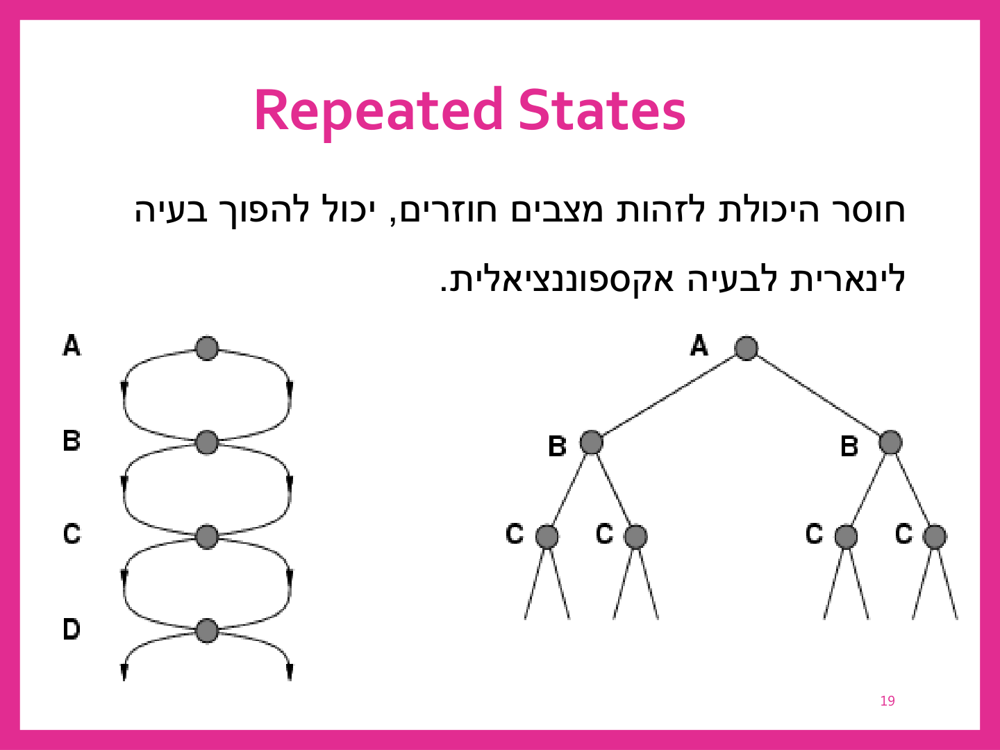
הפתרון: Graph BFS מוסיף קבוצת reached (מצבים שכבר הושגו):
function BREADTH-FIRST-SEARCH(problem) returns a solution node or failure
node ← NODE(problem.INITIAL)
if problem.IS-GOAL(node.STATE) then return node
leaves ← a FIFO queue, with node as an element
reached ← {problem.INITIAL}
while not IS-EMPTY(leaves) do
node ← POP(leaves)
for each child in EXPAND(problem, node) do
s ← child.STATE
if problem.IS-GOAL(s) then return child
if s is not in reached then
add s to reached
add child to leaves
return failure
ההבדל היחיד מגרסת העץ: בן מוכנס לתור רק אם מצבו טרם הושג — כך נמנעים מלטפל שוב באותו Oradea שכבר הופיע דרך Sibiu.
סיבוכיות זמן ומקום — bd
מספר הקודקודים בעץ בגובה d עם גורם פיצול b הוא bd — ולכן זמן ומקום של BFS גדלים אקספוננציאלית עם העומק. טבלת ההמחשה מהמצגת (b=10, קצב עיבוד 104 קודקודים/שנייה):
| עומק | קודקודים | זמן | זיכרון |
|---|---|---|---|
| 2 | 1,100 | 0.11 שנ' | 1 MB |
| 4 | 111,100 | 11 שנ' | 106 MB |
| 6 | 107 | 19 דק' | 10 GB |
| 8 | 109 | 31 שעות | 1 TB |
| 10 | 1011 | 129 יום | 101 TB |
| 12 | 1013 | 35 שנה | 10 PB |
| 14 | 1015 | 3,523 שנה | 1 EB |
מקור: 04-uninformed-search.pdf (עמ' 4–20)
2. Bidirectional Search — שני חיפושים נפגשים באמצע
חיפוש דו-כיווני מנהל שני חיפושים במקביל: אחד קדימה מהמצב ההתחלתי, ואחד אחורה מהמצב הסופי (המטרה) — ועוצר כששני החיפושים נפגשים. בכל שלב בודקים האם הקודקוד הבא נמצא כבר בצד השני — אם כן, יש מסלול מלא.
מבני הנתונים: לכל צד (קדימה/אחורה) יש תור עלים משלו, וטבלת גיבוב של הקודקודים ה"סגורים" (שכבר פותחו) שלו. כשמייצרים קודקוד חדש, בודקים אם הוא כבר בטבלת הסגורים או בעלים של הצד השני — אם כן, משלבים את שני חצאי המסלול. אם לא, מוסיפים אותו לתור העלים של הצד שלו.
הרצה מלאה — Arad ↔ Bucharest
אותה מפת רומניה. שני שורשים: Arad (חיפוש קדימה, נפתח ראשון) ו-Bucharest (חיפוש אחורה, נפתח שני). ההתקדמות:
- 1 — Arad: נפתח קדימה; בניו Timisoara, Sibiu, Zerind נוצרים.
- 2 — Bucharest: נפתח אחורה; בניו (הליכה נגד כיוון הקשתות) Fagaras, Giurgiu, Pitesti, Urziceni נוצרים.
- 3 — Sibiu: נפתח קדימה; בניו Rimnicu Vilcea, Fagaras, Oradea נוצרים — וFagaras כבר נמצא בעלים של החיפוש האחורי!
המפגש: Fagaras נוצר בחיפוש קדימה בעודו כבר קיים בעלים של החיפוש האחורי — משלבים את שני חצאי המסלול: Arad → Sibiu → Fagaras + Fagaras → Bucharest. סה"כ רק 3 פיתוחים עד המפגש — הרבה פחות מ-5 הפיתוחים של BFS חד-כיווני!
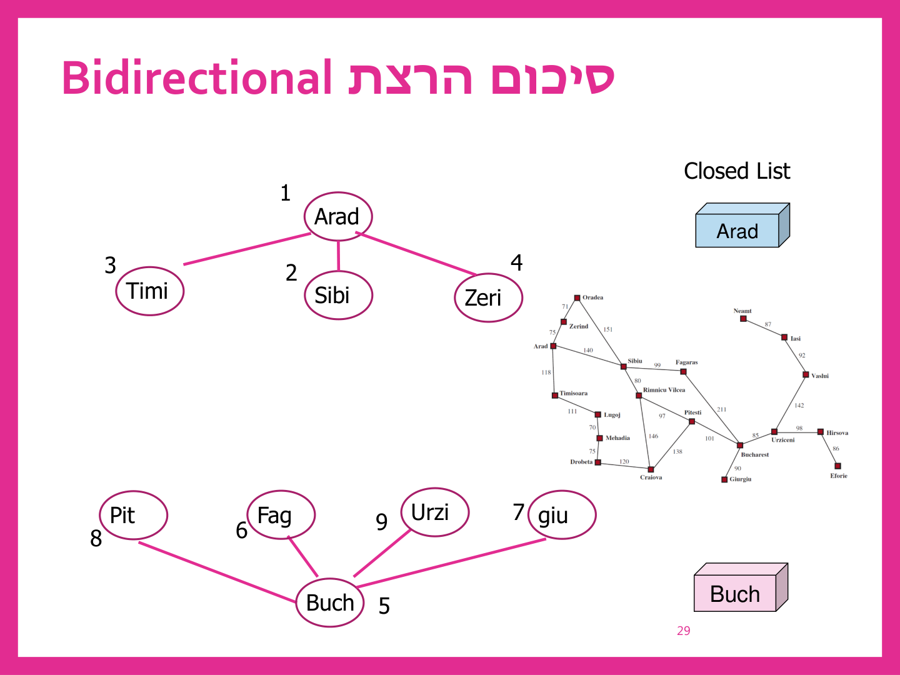
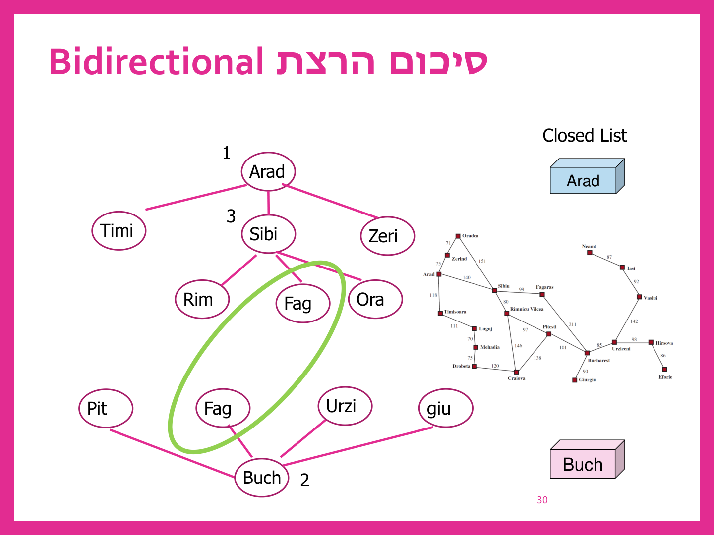
למה זה מהיר יותר — bd/2 במקום bd
עץ חיפוש רגיל בגובה d עולה ~bd. חיפוש דו-כיווני מריץ שני עצים קטנים יותר, כל אחד רק עד עומק d/2 — ועולה ~bd/2 + bd/2, הרבה פחות מ-bd: שני "חרוטים" קטנים מכסים פחות שטח מחרוט אחד גדול.
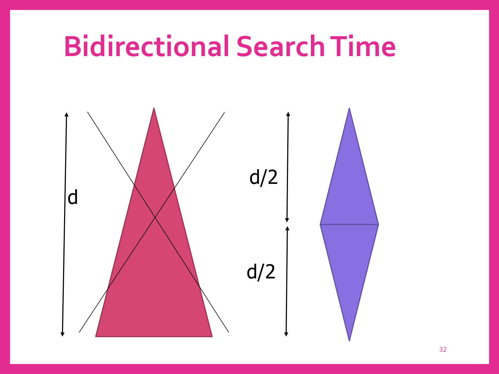
מקור: 04-uninformed-search.pdf (עמ' 21–30)
3. Depth-First Search (DFS) — לצלול לעומק, רגיש לסדר
DFS מפתח תמיד את העלה הכי עמוק ראשון. מבנה הנתונים: מחסנית LIFO. כשמגיעים לעלה שאין לו המשך, חוזרים צעד אחורה (backtrack) עד שמגיעים לקודקוד העמוק ביותר הבא בעץ שעדיין לא מוצה.
הרצה 1 — סדר לקסיקוגרפי: מסלול קצר "במקרה"
אותה בעיה: Arad ל-Bucharest, שוברים שוויון לפי סדר אלפביתי. מ-Arad הבן הראשון לקסיקוגרפית (מבין Sibiu, Timisoara, Zerind) הוא Sibiu; מ-Sibiu הבן הראשון שאינו מוכר הוא Fagaras; מ-Fagaras מגיעים ישר ל-Bucharest — המטרה!
- 1 Arad → 2 Sibiu → 3 Fagaras → 4 Bucharest (מטרה!)
במקרה הזה DFS מוצא מסלול קצר (4 צעדים) מהר — אבל זה מזל של סדר שבירת השוויון, לא תכונה מובטחת של האלגוריתם.
הרצה 2 — סדר אחר: מסלול ארוך ויקר פי שניים
עם שבירת שוויון אחרת, DFS "צולל" בענף אחר לגמרי:
- 1 Arad → 2 Timisoara → 3 Lugoj → 4 Mehadia → 5 Drobeta → 6 Craiova → 7 Pitesti → 8 Bucharest (מטרה!)
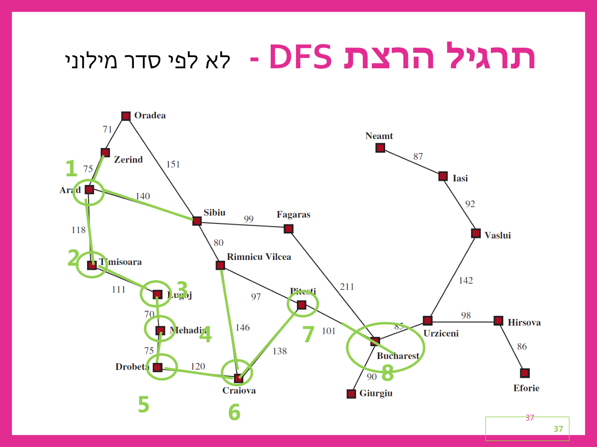
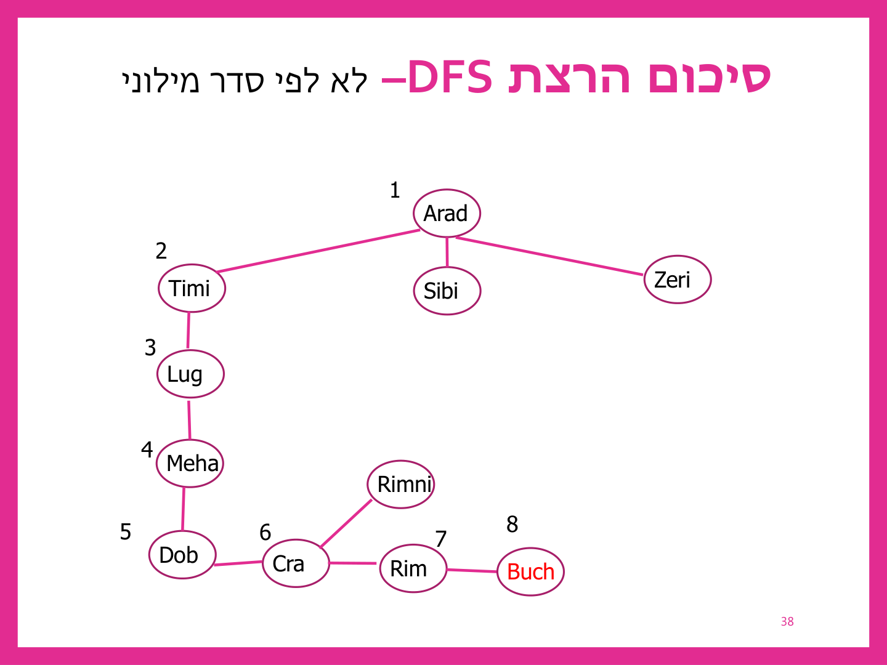
מקור: 04-uninformed-search.pdf (עמ' 31–48)
4. Depth-Limited Search (DLS) — DFS עם תקרה
כדי למנוע מ-DFS "לצלול" לאינסוף, מוסיפים פרמטר ℓ — גובה מלאכותי של העץ. קודקוד ברמה ℓ נחשב חסר ילדים מבחינת האלגוריתם, גם אם במציאות יש לו המשך.
פסאודו-קוד (מילה במילה מהמקור — כולל שגיאות הכתיב isEmpy, cuttof):
DepthLimitedSearch(problem,limit)
{ Leaves = A Stack with MakeNode(initialState(problem)) as an element
result = failure
While not isEmpy (leaves) do:
{ node = Pop(leaves)
if GoalTest(problem,node) = true
return Solution(node)
if Depth[node] = limit
result= cuttof
else if node is not in ClosedList
for each successor in Expand(node, problem)
Push(successor, leaves)
}
return result
}
קודקוד ברמת limit לא מתפתח — במקום זאת מסמנים result = cuttof ולא ממשיכים דרכו. שימו לב: יש ערך החזרה שלישי מלבד פתרון/כישלון — cutoff, שאומר "לא נמצא פתרון בתוך גבול העומק, אבל ייתכן שקיים מעבר לו".
הרצה — limit = 2 על רומניה
אותה מפה, מ-Arad, הפעם עם תקרת עומק ℓ = 2:
| סדר פיתוח | קודקוד | רמה | הערה |
|---|---|---|---|
| 1 | Arad | 0 | |
| 2 | Sibiu | 1 | |
| 3 | Fagaras | 2 | ברמת ה-limit — לא מפותח הלאה (cutoff) |
| 4 | Oradea | 2 | ברמת ה-limit |
| 5 | Rimnicu Vilcea | 2 | ברמת ה-limit |
| 6 | Timisoara | 1 | |
| 7 | Lugoj | 2 | ברמת ה-limit |
| 8 | Zerind | 1 | |
| 9 | Oradea (שוב, דרך Zerind) | 2 | ברמת ה-limit |
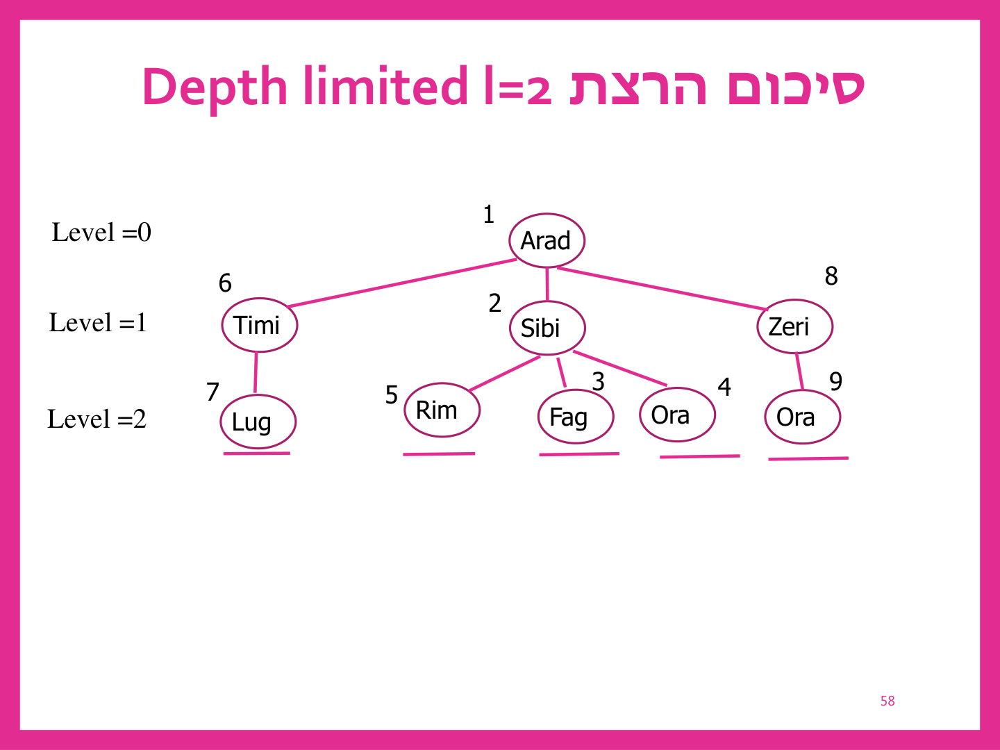
מקור: comparison-uninformed-search.pdf (עמ' 51–59)
5. Iterative Deepening Search (IDS) — הכי טוב משני העולמות
השאלה שמובילה לכאן: איך משלבים את יתרונות DFS (זיכרון) ו-BFS (שלמות ומציאת פתרון רדוד)? התשובה: Iterative Deepening — הרצה חוזרת של DLS עם תקרת עומק שעולה ב-1 בכל פעם, החל מ-0. חשוב: בכל שלב מתחילים מהתחלה — כי בסיום הרצת DFS רגילה, הקודקודים אינם נשמרים בזיכרון.
IterativeDeepeningSearch(problem)
{
for depth = o to ∞
{
result = DepthLimitedSearch (problem, depth)
If result ≠cutoff
return result
}
}
מעלים את ה-limit ב-1 בכל איטרציה ועוצרים ברגע שהתוצאה אינה cutoff.
הרצה על עץ בינארי — ℓ = 0, 1, 2, 3
ℓ=0: רק השורש נבדק ומיד "נמחק" — cutoff. ℓ=1: השורש ושני בניו נבדקים ומוחקים — עדיין cutoff. עם ℓ=2 ו-ℓ=3 העץ גדל בהתאם:
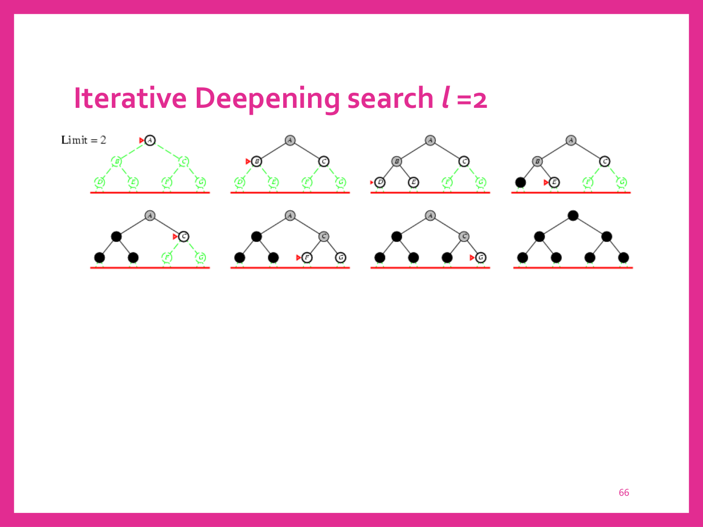
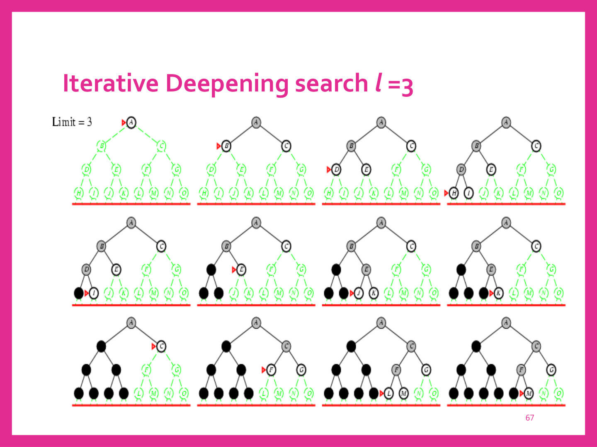
אותו רעיון על מפת רומניה (הדגמה בכתב יד)
limit=0: רק Arad נבדק ונמחק. limit=1: Arad ובניו Sibiu, Timisoara, Zerind — עדיין אין פתרון. limit=2: מתווספת רמה נוספת (Fagaras, Oradea, Rimnicu Vilcea, Lugoj וכו') — עדיין closed, אין פתרון. רק ב-limit=3 מגיעים לרמה 3 ומוצאים את Bucharest — d=3.
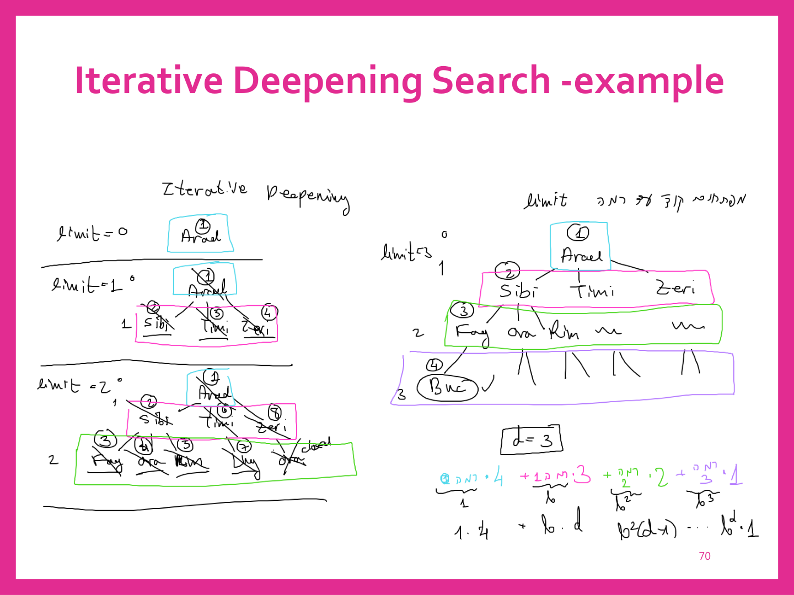
למה "לחזור על העבודה" כמעט לא עולה כלום
נראה בזבזני שבכל איטרציה מפתחים מחדש את כל הרמות העליונות — אבל העלים הם החלק המשמעותי בעץ (אקספוננציאלית יותר קודקודים ברמה האחרונה מכל שאר הרמות ביחד). לכן פיתוח חוזר של קודקודים פנימיים לא מעלה את סיבוכיות הזמן, ובתמורה מקבלים חיסכון עצום במקום.
הנוסחה המדויקת (חובה לזכור):
N_BFS = b^0 + b^1 + b^2 + … + b^d N_IDS = (d+1)·b^0 + d·b^1 + (d-1)·b^2 + … + 2·b^(d-1) + b^d
הדוגמה המספרית שחוזרת במבחנים — b=10, d=5:
| חישוב | סה"כ קודקודים | |
|---|---|---|
| N_BFS | 1+10+100+1,000+10,000+100,000 | 111,111 |
| N_IDS | 6+50+400+3,000+20,000+100,000 | 123,456 |
מקור: comparison-uninformed-search.pdf (עמ' 57–69)
6. Uniform-Cost Search (UCS) — לפתח את הזול ביותר
UCS מפתח את הקודקוד בעל עלות מסלול נמוכה ביותר (g) ראשון. מבנה הנתונים: תור עלים ממוין לפי עלות מסלול. שאלת המצגת: "מה קורה כשעלות כל שלב זהה?" — התשובה: UCS מתנוון בדיוק ל-BFS.
דוגמה קטנה לחימום
עץ עם עלויות קשתות: a→b (2), a→c (1), b→f (1), b→G (2), c→d (1), c→e (2). מחפשים מסלול קצר מ-a ל-G:
| שלב | קודקוד שנפתח (g) | open list אחרי הפיתוח |
|---|---|---|
| 1 | a (0) | b(2), c(1) |
| 2 | c (1) | b(2), d(2), e(3) |
| 3 | b (2) | d(2), e(3), f(3), G(4) |
| 4 | d (2) | e(3), f(3), G(4) |
| 5 | e (3) | f(3), G(4) |
| 6 | f (3) | G(4) |
| 7 | G (4) — מטרה! | ריק |
המטרה נמצאה בעלות 4 — המסלול a → b → G (2+2=4).
הרצה מלאה — Arad ל-Bucharest (עלות סופית 418)
אותה מפה, אותם משקלים. כאן ההבדל הקריטי מ-BFS בולט במיוחד: בדיקת המטרה מתבצעת רק בעת שליפה מהתור (לא ביצירה!). לכן קודקוד Bucharest שנוצר מוקדם ויקר לא נבחר לפני שנמצא מסלול זול יותר:
| # | קודקוד | g |
|---|---|---|
| 1 | Arad | 0 |
| 2 | Zerind | 75 |
| 3 | Timisoara | 118 |
| 4 | Sibiu | 140 |
| 5 | Oradea (דרך Zerind) | 146 |
| 6 | Rimnicu Vilcea | 220 |
| 7 | Lugoj | 229 |
| 8 | Fagaras | 239 |
| — | Oradea (דרך Sibiu) — נפסל, כבר ב-closed | 291 |
| 9 | Mehadia | 299 |
| 10 | Pitesti | 317 |
| 11 | Craiova | 366 |
| 12 | Drobeta | 374 |
| 13 | Bucharest — המטרה! | 418 |
לאורך ההרצה נפסלים (כבר ב-closed): Sibiu (g=292, דרך Oradea), Oradea (g=291, דרך Sibiu) ו-Pitesti (g=504, דרך Craiova). הנקודה הקריטית: Bucharest נוצרת לראשונה דרך Fagaras עם g=450 — אך זה לא המינימום בתור, ולכן לא נבחרת! רק כשנוצר מסלול זול יותר דרך Pitesti (317+101=418), הוא הנשלף וזוכה בתשובה.
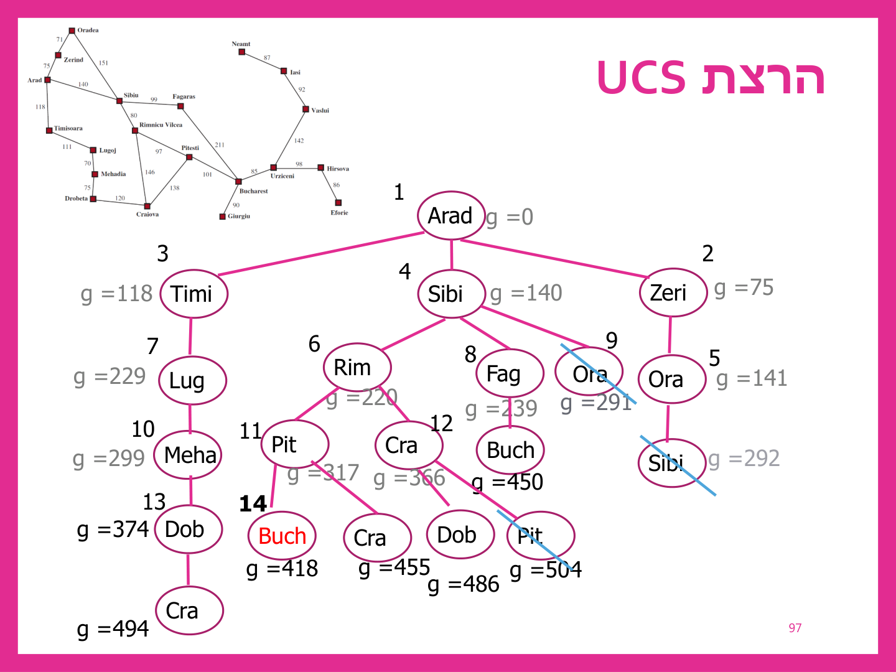
מקור: comparison-uninformed-search.pdf (עמ' 70–95)
7. טבלת השוואה מסכמת + מלכודות למבחן
המרצה מספקת טבלת השוואה ריקה כתרגול עצמי (comparison-uninformed-search.pdf) — כאן היא מולאת על בסיס כל התכונות שנדונו לעיל לכל אלגוריתם, בתוספת ניתוח פורמלי סטנדרטי (התואם את ספר הלימוד שעליו מבוססת ההרצאה) עבור פרטים שלא פורטו במפורש בשקפים.
| תכונה | BFS | UCS | Bidirectional | DFS | DLS | IDS |
|---|---|---|---|---|---|---|
| שלמות | כן (b סופי) | כן (עלות כל צעד ≥ ε>0) | כן (כמו BFS) | לא (עלול "ללכת לאיבוד" בעץ אינסופי) | לא (ℓ<d ⇒ cutoff, גם אם קיים פתרון) | כן (כמו BFS) |
| אופטימליות | רק אם עלויות שוות | כן | רק אם עלויות שוות | לא | לא | רק אם עלויות שוות |
| סיבוכיות זמן | O(bd) | תלוי במבנה העלויות (≈bd כשעלויות שוות) | O(bd/2) | O(bm) | O(bℓ) | O(bd) (~11% תוספת בדוגמה) |
| סיבוכיות מקום | O(bd) | דומה ל-BFS (≈bd כשעלויות שוות) | O(bd/2) | O(b·m) | O(b·ℓ) | O(b·d) (כמו DFS) |
מקור: comparison-uninformed-search.pdf, quiz-and-tables.md, homework-1-3.md
8. תרגיל הבית — תרגיל 3
בינה מלאכותית — תרגיל מספר 3
נחפש במפת רומניה את המסלול הקצר ביותר מ-Lugoj לבוקרסט.
עבור כל אחד מהאלגוריתמים הבאים הראו את עץ החיפוש המתקבל מהפעלת אלגוריתם החיפוש, כשכל קודקוד ממוספר לפי סדר הפיתוח — ולא לפי סדר הכנסתו לקבוצת העלים.
הניחו שאם שני קודקודים בעלי אותה עדיפות, יפותח קודם הקודקוד בעל ערך לקסיקוגרפי הנמוך יותר (לפי סדר הא"ב).
אם יש חישוב לערך קודקוד — חובה לציין את החישוב.שאלות נכון או לא נכון — לא להגשה (עבור כל משפט, ציינו אם הוא נכון או לא נכון. חובה לנמק בקצרה):
- א. Uniform Cost Search
- ב. A* Search
- א. Uniform Cost Search הוא מקרה פרטי של A*.
- ב. כשהפונקציה ההיוריסטית מחזירה ערך קטן מהמרחק האמיתי מהמטרה h* אבל אינו קרוב למרחק האמיתי מהמטרה, היא תגרום ל-A* להחזיר פתרון שאינו בעל הערך אופטימלי.
- ג. BFS הוא מקרה פרטי של UCS.
- ד. BFS הוא מקרה פרטי של A*.
- ה. המקום בזיכרון ש-A* צריך יכול להיות טוב יותר מהמקום בזיכרון ש-DFS צריך.
א. Uniform Cost Search
עץ החיפוש (מספרים אדומים = סדר הפיתוח; ליד כל קודקוד g = עלות המסלול מ-Lugoj):
Lugoj (1) g=0
├── Mehadia (2) g=70
│ └── Doberta (4) g=145
│ └── Craiova (6) g=265
│ ├── Pitesti (10) g=403
│ │ ├── Bucharest (16) g=504 ← המטרה
│ │ └── Rimnicu (15) g=500 ✗ כבר ב-closed
│ └── Rimnicu (11) g=411
│ ├── Pitesti g=508 (לא פותח)
│ └── Sibiu (14) g=491 ✗ כבר ב-closed
└── Timisora (3) g=111
└── Arad (5) g=229
├── Sibiu (8) g=369
│ ├── Fagaras (13) g=468
│ │ └── Bucharest g=679 (לא פותח, נשאר בעלים)
│ ├── Rimnicu (12) g=449 ✗ כבר ב-closed
│ └── Oradea g=520 (לא פותח)
└── Zerind (7) g=304
└── Oradea (9) g=375
סדר הפיתוח לפי g עולה: Lugoj(0), Mehadia(70), Timisora(111), Doberta(145), Arad(229), Craiova(265), Zerind(304), Sibiu(369), Oradea(375), Pitesti(403), Rimnicu(411), Rimnicu-כפול(449, נפסל), Fagaras(468), Sibiu-כפול(491, נפסל), Rimnicu-כפול(500, נפסל), Bucharest(504) — המטרה!
המסלול האופטימלי: Lugoj → Mehadia → Doberta → Craiova → Pitesti → Bucharest, בעלות 504. שימו לב: Bucharest דרך Fagaras (g=679) נשארת בקבוצת העלים ואינה נבחרת — המטרה מוכרזת רק כשמפתחים את Bucharest הזולה.
ב. A* Search
עץ החיפוש עם חישוב f = g + h לכל קודקוד:
Lugoj (1)
├── Mehadia (2) f = 70 + 241 = 311
│ └── Doberta (3) f = 145 + 242 = 387
│ └── Craiova (4) f = 265 + 160 = 425
│ ├── Pitesti (6) f = 403 + 101 = 504
│ │ └── Bucharest (7) f = 504 + 0 = 504 ← המטרה
│ └── Rimnicu f = 411 + 193 = 604 (לא פותח)
└── Timisora (5) f = 111 + 329 = 440
└── Arad f = 229 + 366 = 595 (לא פותח)
סדר הפיתוח: Lugoj(1), Mehadia(2,f=311), Doberta(3,f=387), Craiova(4,f=425), Timisora(5,f=440), Pitesti(6,f=504), Bucharest(7,f=504). A* פיתח רק 7 קודקודים לעומת 16 ב-UCS — ההיוריסטיקה ממקדת את החיפוש. אותו מסלול אופטימלי, אותה עלות 504.
שאלות נכון/לא נכון
א. UCS הוא מקרה פרטי של A*. — נכון. A* בוחר קודקוד עם ערך מינימלי של g(v)+h(v), ואילו UCS בוחר לפי ערך מינימלי של g(v) בלבד. אם h(v)=0 נקבל בדיוק את אותה עבודה.
ב. היוריסטיקה קטנה מ-h* אך רחוקה ממנה תגרום לפתרון לא-אופטימלי. — לא נכון. כל עוד ההיוריסטיקה קטנה מהמרחק האמיתי, A* תמיד יחזיר ערך אופטימלי; ככל שהיא רחוקה מהאמת, A* פחות ממוקד ומפתח יותר קודקודים — אבל עדיין מגיע לפתרון האופטימלי.
ג. BFS הוא מקרה פרטי של UCS. — נכון. כשעלות כל פעולה זהה, UCS (הבוחר לפי עלות מסלול מינימלית) מתנהג בדיוק כמו BFS (הבוחר לפי עומק).
ד. BFS הוא מקרה פרטי של A*. — נכון. משילוב הסעיפים א' ו-ג': BFS ⊂ UCS ⊂ A* כאשר עלות כל צעד קבועה וגם h(n)=0.
ה. מקום הזיכרון ש-A* צריך יכול להיות טוב יותר מ-DFS. — נכון. DFS דורש O(bm) (כל צאצאי המסלול הנוכחי שמורים). אם ההיוריסטיקה מושלמת (h=h*), A* מפתח רק את המסלול האופטימלי (אורך d) ודורש O(bd) — ומכיוון ש-d ≤ m, זה יכול להיות טוב יותר.
מקור: ex03.pdf, sol03.pdf
9. בדיקה עצמית
בהרצת BFS על רומניה (שבירת שוויון לקסיקוגרפית), מתי בדיוק מזוהה קודקוד המטרה Bucharest?
מדוע Uniform-Cost Search תמיד מחזיר את המסלול הזול ביותר, גם אם קודקוד המטרה כבר נוצר מוקדם יותר בעץ בעלות גבוהה?
בהרצת DFS מ-Arad ל-Bucharest, מה קובע אם ה"צלילה" תמצא מסלול קצר (4 צעדים) או ארוך (8 צעדים)?
מה ההבדל בין תשובת cutoff לתשובת failure ב-Depth-Limited Search?
בדוגמה b=10, d=5, מה אחוז התוספת (overhead) בזמן הריצה של IDS לעומת BFS?
בהרצת Bidirectional Search על רומניה (Arad↔Bucharest), היכן נפגשים שני החיפושים?
מה נכון לגבי ה-closed list באלגוריתמי חיפוש על גרפים?
באילו תנאים BFS מתנהג בדיוק כמו Uniform-Cost Search?
סיימתם את הפרק? סמנו אותו כהושלם: